Configurações de Produção - Aba Saida de insumos
Para acessar as Configurações de produção é necessário ir no menu:
Administração -> Definição -> Produção -> Configurações de produção
Na Aba Saída de ínsumos da tela de configurações de produção é realizado a configurações relacionadas ao Apontamento de saída de Insumos.
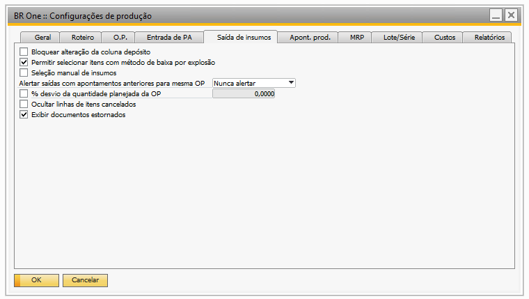{kind=link}
Bloquear alteração da coluna depósito
Com esse parâmetro desmarcado, será possível alterar o valor da coluna “Depósito” da tela “BR One :: Saída de insumos”.
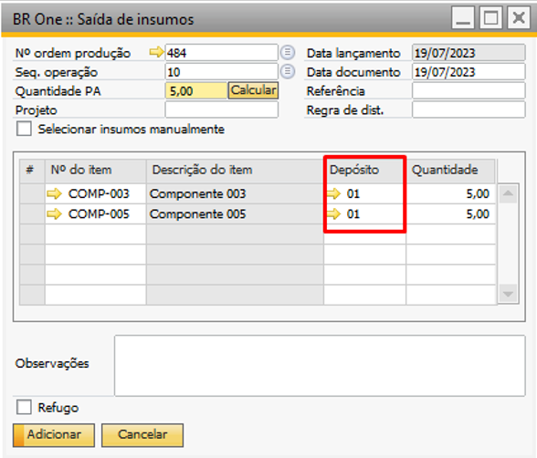{kind=link}
Caso o parâmetro esteja marcado, não será possível alterar o valor da coluna “Depósito”.
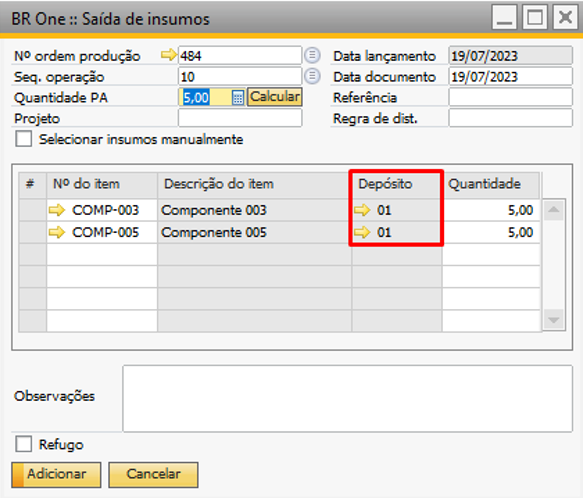{kind=link}
Permitir selecionar itens com método de baixa por explosão
Com o parâmetro desmarcado, somente será permitido adicionar itens nas linhas onde o método de baixa esteja configurado na Ordem de produção (OP) como “Manual”.
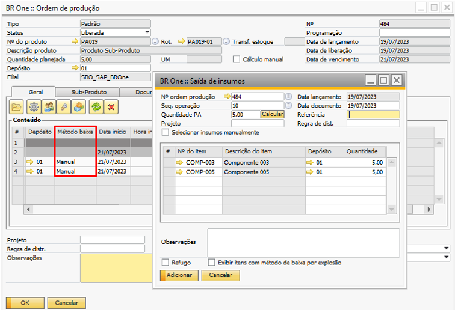{kind=link}
Quando o parâmetro estiver marcado, uma flag será exibido na tela, permitindo a seleção de itens configurados com o método de “Baixa por explosão”. Ao marcar essa flag, a tela permitirá a seleção desses itens específicos. No entanto, se a flag estiver desmarcada, a tela só permitirá a escolha de itens com o método de baixa configurado como “Manual”.
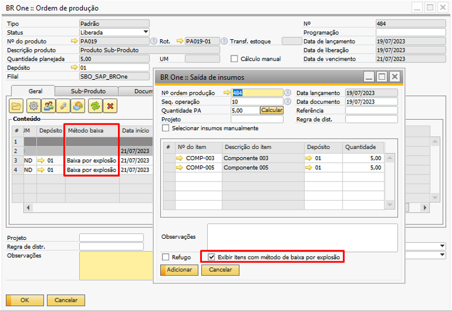{kind=link}
Seleção manual de insumos
Esse parâmetro determina se a flag “Selecionar insumos manualmente” na tela “BR One ::Saída de insumos” será marcada ou não por padrão.
Quando o parâmetro esteja marcado, ao abrir a tela de “BR One :: Saída de insumos”, a flag “Selecionar insumos manualmente” também será marcada automaticamente.
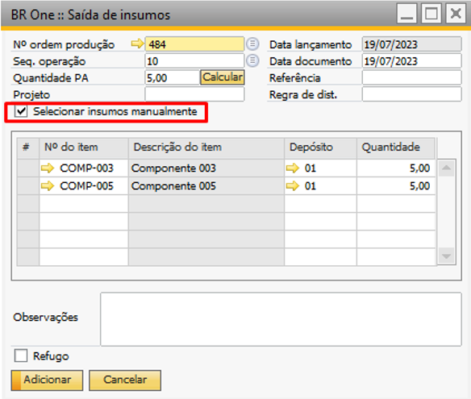{kind=link}
Caso o parâmetro não esteja marcado, ao abrir a tela “BR One :: Saída de insumos” a flag não marcada.
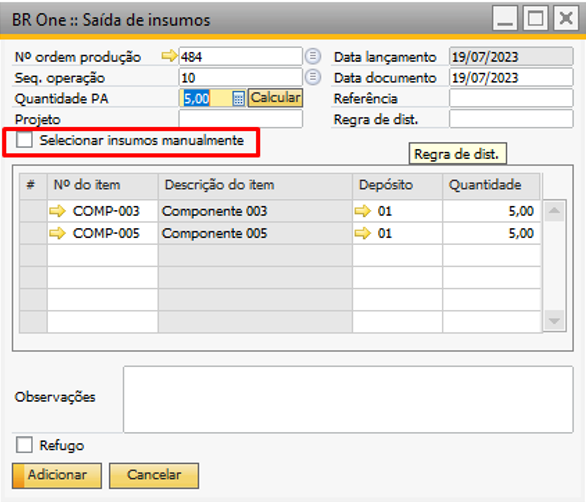{kind=link}
Alertar saídas com apontamentos anteriores para mesma OP
Essa validação possui 4 opções:
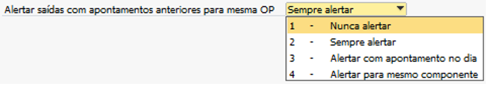{kind=link}
Nunca alertar (padrão);
Sempre alertar;
Alerta com apontamento no dia;
Alertar para mesmo componente.
Opção “Nunca alertar”:
Quando selecionada, as de “Saídas de Insumos” serão registradas sem exigir validação em relação à quantidade de Saídas que já foram realizadas para aquela Ordem de Produção (OP). Isso significa que o sistema não alertará ou solicitará confirmação, permitindo que você se registre as “Saídas de Insumos” diretamente.
Opção “Sempre alertar”:
Quando selecionado, cada vez que você inserir uma “Saída de Insumos” para uma determinada Ordem de Produção (OP), o sistema realizará uma validação. A validação verificará se a OP possui alguma “Saída de Insumos” já registrada anteriormente. Se houver uma “Saída de Insumos” anterior para esse Ordem de produção (OP), uma mensagem de alerta será exibida:
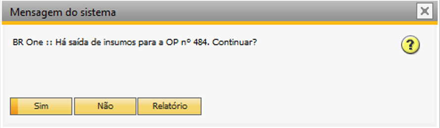{kind=link}
BR One :: Há saída de insumos para OP nº x. Continuar?
Quando clicar no botão “Sim”, a Saída de Insumo será inserida normalmente. Se optar por clicar em “Não”, o processo será cancelado e a Saída de Insumo não será registrada. Por outro lado, se você escolher a opção “Relatório”, o processo também será cancelado e, em vez disso, um relatório com as Saídas de Insumo será exibido abaixo:
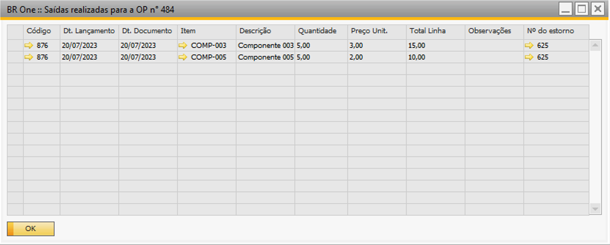{kind=link}
Opção “Alertar com apontamento no dia”:
Ao escolher essa opção, o processo será semelhante ao detalhado acima. Porém, haverá uma validação específica: o sistema verificará se foram realizadas Saídas de Insumos naquele dia. Saídas registradas em outros dias serão desconsideradas para essa validação. Se não houver Saídas de Insumos registradas para aquele dia, o processo continuará normalmente e a nova Saída de Insumos será incorporada.
Opção “Alertar para mesmo componente”:
Com essa opção selecionada, o processo também será semelhante ao detalhado acima. No entanto, a validação será direcionada para verificar se já houve uma Saída de Insumo para o componente que está sendo registrado. Essa validação também incluirá Saídas de Insumos para itens alternativos, se houver. Se já houver uma Saída de Insumo para o mesmo componente (ou seus itens alternativos), uma tela de mensagem será exibida, alertando sobre a situação. Caso não haja nenhuma Saída de Insumo para o componente em questão, a saída será registrada normalmente.
% desvio da quantidade planejada da OP
Esse parâmetro determina se a quantidade será validada conforme a quantidade planejada da Ordem de produção (OP). Caso o parâmetro esteja marcado, é possível informar uma porcentagem de desvio a ser permitida durante a validação. O campo em questão define a porcentagem máxima da quantidade que poder ser excedida na tela “BR One :: Saída de insumos”, em relação à quantidade planejada da Ordem de produção (OP).
Exemplo: A Ordem de produção (OP) possui uma quantidade planejada para o item COMP-003 e COMP-005 igual a 50 e o desvio está configurado como 0%, portanto, não poderá ser feita a saída de insumo para uma quantidade superior a 50 planejadas na Ordem de produção (OP)
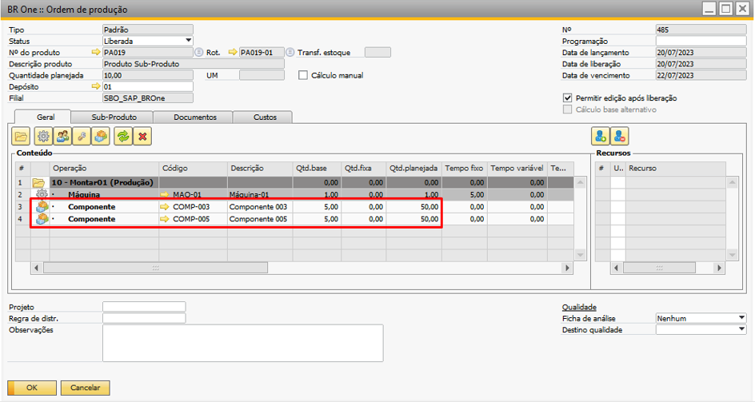 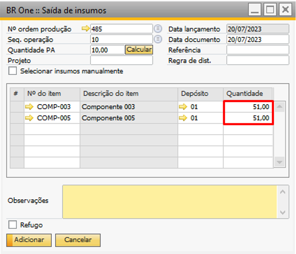{kind=link}
{kind=link}
{kind=link}
BR One :: Quantidade apontada não pode ser superior que a quantidade planejada: x. Desvio permitido de x%. Total permitido: x. Total apontado: x.
Se o desvio estiver configurado para 50%, será possível realizar o apontamento de até 25 quantidades a mais da planejada, ou seja, será possível apontar até 75 quantidades.
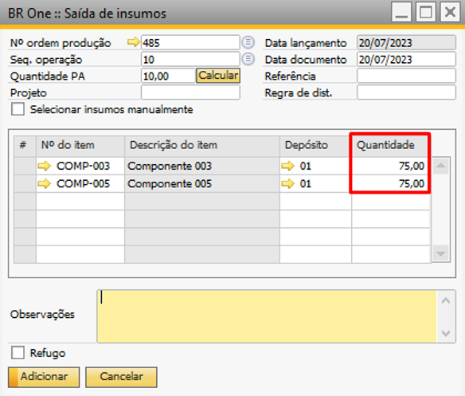{kind=link}
{kind=link}
BR One :: Operação realizada com sucesso.
Ocultar linhas de itens cancelados
Com o parâmetro marcado, ao abrir a tela “BR One :: Saída de entradas”, os itens cancelados na Ordem de Produção (OP) não serão exibidos.
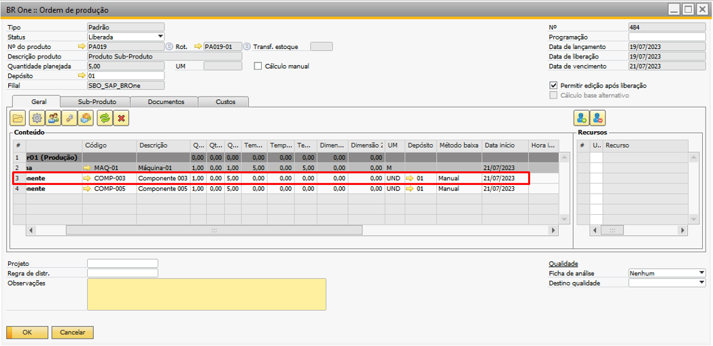 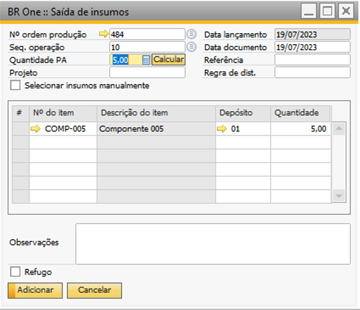{kind=link}
{kind=link}
Na Ordem de produção (OP), o componente COMP-003 está cancelado, portanto, ele não será exibido na tela “BR One :: Saída de insumos”.
Exibir documentos estornados
Com o parâmetro desmarcado, as Ordens de Produção (OPs) que possuem documentos estornados não serão exibidas na tela “BR One :: Detalhe custo componentes”.
No entanto, ao marcar esse parâmetro, as Ordens de produção (OPs) que possuem documentos estornados serão exibidas na tela “BR One :: Detalhe custo componentes”.
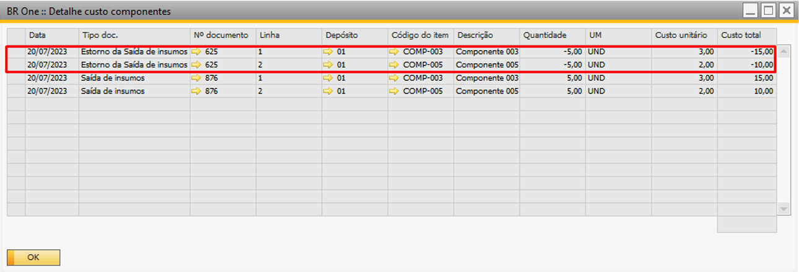{kind=link}